CODING AGENTS AS PIXEL WORLD MODELS
traex/GPT-6.1-Sol · 0030
点击播放 · 原生 RGB 像素
逐轮保存的候选
回放视频、检查图与代码变化。
每份候选均可单独播放。实际图片检查记录在下方工具轨迹中。
候选 01播放与检查图
点击播放 · 原生 RGB 像素

展开代码变化
--- 上一保存版本
+++ 本次保存版本
@@ -0,0 +1,142 @@
+from pathlib import Path
+import numpy as np
+from PIL import Image
+import cv2
+from scipy.ndimage import gaussian_filter, map_coordinates
+import artifact_io
+
+ROOT=Path(__file__).resolve().parent
+W,H=256,144
+original=np.array(Image.open(ROOT/'first_frame.png').convert('RGB'))
+yy,xx=np.mgrid[:H,:W].astype(np.float64)
+# Positions and camera-scaled radii measured only in the starting image.
+centers=np.array([[85.9,51.5],[121.1,54.7],[135.5,56.7]],float)
+radii=np.array([[7.45,7.25],[7.65,7.55],[7.45,7.5]])
+
+
+def clean_plate():
+ mask=np.zeros((H,W),np.uint8)
+ for cx,cy,rx,ry in [(85,52,13,10),(99,53,15,7),(120,55,13,12),
+ (136,57,12,12),(152,60,17,8)]:
+ mask[((xx-cx)/rx)**2+((yy-cy)/ry)**2<1]=255
+ plate=cv2.inpaint(original,mask,4,cv2.INPAINT_NS).astype(float)
+ # Retain fine wood-grain structure in reconstructed areas with a local,
+ # nonlearned sample from an unoccupied part of the same tabletop.
+ sample=cv2.remap(original.astype(np.float32),(xx+61).astype(np.float32),
+ (yy+8).astype(np.float32),cv2.INTER_LINEAR,borderMode=cv2.BORDER_REFLECT)
+ detail=sample-gaussian_filter(sample,(1.4,2.5,0))
+ feather=gaussian_filter((mask>0).astype(float),1.1)
+ plate+=detail*feather[...,None]*0.5
+ # No changes at all outside the removed object/shadow areas.
+ plate=np.where(mask[...,None]>0,plate,original.astype(float))
+ return plate,mask
+
+
+def trajectories():
+ # Equal-mass, frictional rolling spheres. Small timesteps resolve the
+ # two consecutive contacts rather than animating the balls independently.
+ pos=centers.copy()
+ vel=np.zeros((3,2)); vel[0]=[36.0,3.27]
+ r=np.array([7.25,7.25,7.25])
+ dt=1/1200
+ states=[]; angles=[]; rot=np.zeros(3)
+ for step in range(19*300+1):
+ if step%300==0:
+ states.append(pos.copy()); angles.append(rot.copy())
+ speed=np.linalg.norm(vel,axis=1)
+ dec=np.maximum(0,1-6.2*dt/np.maximum(speed,1e-12))
+ vel*=dec[:,None]
+ pos+=vel*dt
+ rot+=vel[:,0]*dt/r
+ for i,j in [(0,1),(1,2),(0,2)]:
+ delta=pos[j]-pos[i]; d=np.linalg.norm(delta)
+ if d<r[i]+r[j]:
+ n=delta/d
+ rel=np.dot(vel[j]-vel[i],n)
+ if rel<0:
+ impulse=-(1+0.84)*rel/2
+ vel[i]-=impulse*n; vel[j]+=impulse*n
+ correction=max(r[i]+r[j]-d-0.0001,0)*0.5*n
+ pos[i]-=correction; pos[j]+=correction
+ return np.array(states),np.array(angles)
+
+
+def create_layers(plate):
+ residual=original.astype(float)-plate
+ # Partition the original photograph into soft, complementary object and
+ # shadow layers. Their sum reconstructs the original exactly.
+ d=np.stack([((xx-c[0])/13)**2+((yy-c[1])/10)**2 for c in centers])
+ # Shadows extend rightwards; foreground pixels always belong to their ball.
+ weights=np.exp(-d*1.5)
+ weights/=np.maximum(weights.sum(axis=0),1e-30)
+ for k,(c,r) in enumerate(zip(centers,radii)):
+ core=((xx-c[0])/r[0])**2+((yy-c[1])/r[1])**2<1.04
+ weights[:,core]=0; weights[k,core]=1
+ weights/=np.maximum(weights.sum(axis=0),1e-30)
+ layers=[residual*weights[k,...,None] for k in range(3)]
+ textures=[]
+ for k,(c,r) in enumerate(zip(centers,radii)):
+ # A smoothed illumination field remains camera-fixed, while the
+ # actual photographed seam and felt detail rotate on the sphere.
+ u=(xx-c[0])/r[0];v=(yy-c[1])/r[1]
+ sphere=u*u+v*v<0.90
+ filled=original.copy()
+ if k==0:
+ seam=(sphere)&(original[...,2]>original[...,0]+7)&(original[...,0]>109)
+ elif k==1:
+ seam=sphere & (original[...,0]>75)& (original[...,2]>53)
+ else:
+ seam=sphere & (original[...,1]>157)& (original[...,2]>109)
+ # Fill photographed seams solely to estimate stationary diffuse light.
+ smooth=cv2.inpaint(filled,(seam*255).astype(np.uint8),2,cv2.INPAINT_NS).astype(float)
+ smooth=gaussian_filter(smooth,(1.2,1.2,0))
+ textures.append((smooth, original.astype(float)-smooth))
+ return layers,textures
+
+
+def rotated_detail(k,angle,textures):
+ c=centers[k];r=radii[k]
+ u=(xx-c[0])/r[0];v=(yy-c[1])/r[1]
+ rr=u*u+v*v
+ z=np.sqrt(np.maximum(0,1-rr))
+ # Rotation around the in-plane vertical rolling axis. The unobtainable
+ # rear hemisphere is completed by reflecting the photographed felt.
+ a=-angle
+ sx=np.cos(a)*u+np.sin(a)*z
+ sz=-np.sin(a)*u+np.cos(a)*z
+ sy=v
+ sx=np.where(sz>=0,sx,-sx)
+ smooth,tex=textures[k]
+ moved=cv2.remap(tex.astype(np.float32),(c[0]+r[0]*sx).astype(np.float32),
+ (c[1]+r[1]*sy).astype(np.float32),cv2.INTER_LINEAR,borderMode=cv2.BORDER_REFLECT)
+ # Edge shading and the low-resolution original outline stay unchanged.
+ alpha=np.clip((0.96-rr)/0.16,0,1)
+ return (moved-tex)*alpha[...,None]
+
+
+def main():
+ plate,mask=clean_plate()
+ layers,textures=create_layers(plate)
+ states,angles=trajectories()
+ frames=[original.copy()]
+ for t in range(1,20):
+ frame=plate.copy()
+ # Composite furthest balls first; the orange is slightly nearer camera.
+ for k in range(3):
+ delta=states[t,k]-centers[k]
+ layer=layers[k].copy()
+ if abs(angles[t,k])>1e-4:
+ layer+=rotated_detail(k,angles[t,k],textures)
+ # Bilinear sampling retains the natural source photograph's focus.
+ moved=cv2.remap(layer.astype(np.float32),(xx-delta[0]).astype(np.float32),
+ (yy-delta[1]).astype(np.float32),cv2.INTER_LINEAR,
+ borderMode=cv2.BORDER_CONSTANT)
+ frame+=moved
+ frames.append(np.clip(np.rint(frame),0,255).astype(np.uint8))
+ frames=np.stack(frames)
+ artifact_io.save(frames,ROOT)
+ Image.fromarray(np.uint8(np.clip(plate,0,255))).save(ROOT/'.tmp/plate.png')
+ np.save(ROOT/'.tmp/positions.npy',states)
+ print(states[:, :, 0].round(2))
+
+if __name__=='__main__': main()
候选 02播放与检查图
点击播放 · 原生 RGB 像素
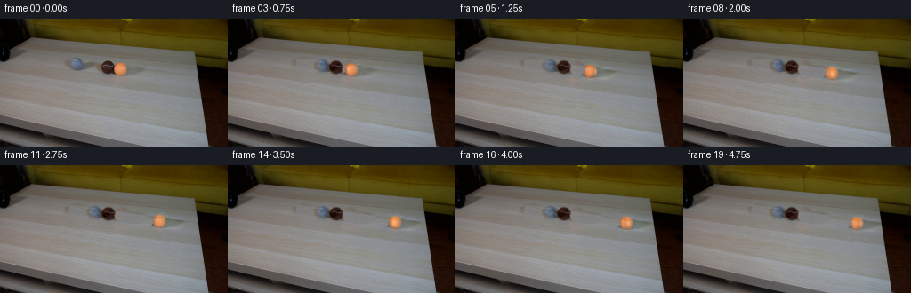
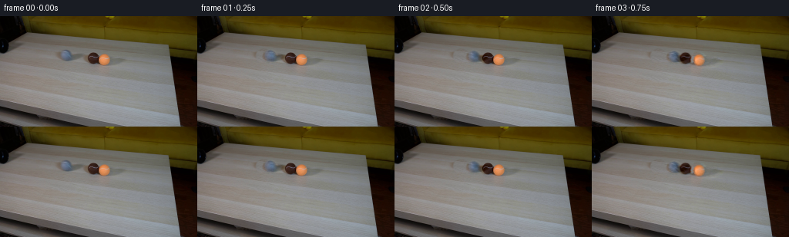
展开代码变化
--- 上一保存版本
+++ 本次保存版本
@@ -15,20 +15,20 @@
def clean_plate():
- mask=np.zeros((H,W),np.uint8)
- for cx,cy,rx,ry in [(85,52,13,10),(99,53,15,7),(120,55,13,12),
- (136,57,12,12),(152,60,17,8)]:
- mask[((xx-cx)/rx)**2+((yy-cy)/ry)**2<1]=255
- plate=cv2.inpaint(original,mask,4,cv2.INPAINT_NS).astype(float)
- # Retain fine wood-grain structure in reconstructed areas with a local,
- # nonlearned sample from an unoccupied part of the same tabletop.
- sample=cv2.remap(original.astype(np.float32),(xx+61).astype(np.float32),
- (yy+8).astype(np.float32),cv2.INTER_LINEAR,borderMode=cv2.BORDER_REFLECT)
- detail=sample-gaussian_filter(sample,(1.4,2.5,0))
- feather=gaussian_filter((mask>0).astype(float),1.1)
- plate+=detail*feather[...,None]*0.5
- # No changes at all outside the removed object/shadow areas.
- plate=np.where(mask[...,None]>0,plate,original.astype(float))
+ mask=np.zeros((H,W),float)
+ for cx,cy,rx,ry in [(86,51.5,10,9),(98,53.5,14,6),
+ (121,55,11,10),(136,57,10,10),(149,59,16,7)]:
+ q=((xx-cx)/rx)**2+((yy-cy)/ry)**2
+ mask=np.maximum(mask,np.clip((1.35-q)/0.45,0,1))
+ sample=cv2.remap(original.astype(np.float32),xx.astype(np.float32),
+ (yy+26).astype(np.float32),cv2.INTER_LINEAR,
+ borderMode=cv2.BORDER_REFLECT).astype(float)
+ region=(xx>60)&(xx<182)&(yy>36)&(yy<77)&(gaussian_filter(mask,2)<.01)
+ X=(xx-120)/60;Y=(yy-55)/20
+ A=np.stack([np.ones_like(xx),X,Y,X*Y,X*X,Y*Y],-1)
+ coef=np.linalg.lstsq(A[region],(original-sample)[region],rcond=None)[0]
+ correct=sample+A@coef
+ plate=original*(1-mask[...,None])+correct*mask[...,None]
return plate,mask
候选 03播放与检查图
点击播放 · 原生 RGB 像素
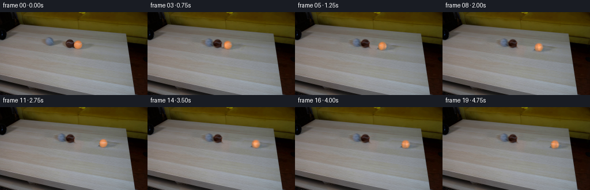
展开代码变化
--- 上一保存版本
+++ 本次保存版本
@@ -15,20 +15,19 @@
def clean_plate():
- mask=np.zeros((H,W),float)
- for cx,cy,rx,ry in [(86,51.5,10,9),(98,53.5,14,6),
- (121,55,11,10),(136,57,10,10),(149,59,16,7)]:
+ mask=np.zeros((H,W),np.uint8)
+ for cx,cy,rx,ry in [(83,52,13,10),(98,53.5,16,7),
+ (119,55,13,11),(135.5,57,12,11),(149,59,18,8)]:
q=((xx-cx)/rx)**2+((yy-cy)/ry)**2
- mask=np.maximum(mask,np.clip((1.35-q)/0.45,0,1))
+ mask[q<1.1]=255
+ plate=cv2.inpaint(original,mask,4,cv2.INPAINT_NS).astype(float)
sample=cv2.remap(original.astype(np.float32),xx.astype(np.float32),
(yy+26).astype(np.float32),cv2.INTER_LINEAR,
borderMode=cv2.BORDER_REFLECT).astype(float)
- region=(xx>60)&(xx<182)&(yy>36)&(yy<77)&(gaussian_filter(mask,2)<.01)
- X=(xx-120)/60;Y=(yy-55)/20
- A=np.stack([np.ones_like(xx),X,Y,X*Y,X*X,Y*Y],-1)
- coef=np.linalg.lstsq(A[region],(original-sample)[region],rcond=None)[0]
- correct=sample+A@coef
- plate=original*(1-mask[...,None])+correct*mask[...,None]
+ detail=sample-gaussian_filter(sample,(1.3,2.0,0))
+ feather=gaussian_filter((mask>0).astype(float),1.1)
+ plate+=detail*feather[...,None]*0.8
+ plate=np.where(mask[...,None]>0,plate,original.astype(float))
return plate,mask
候选 04播放与检查图
点击播放 · 原生 RGB 像素

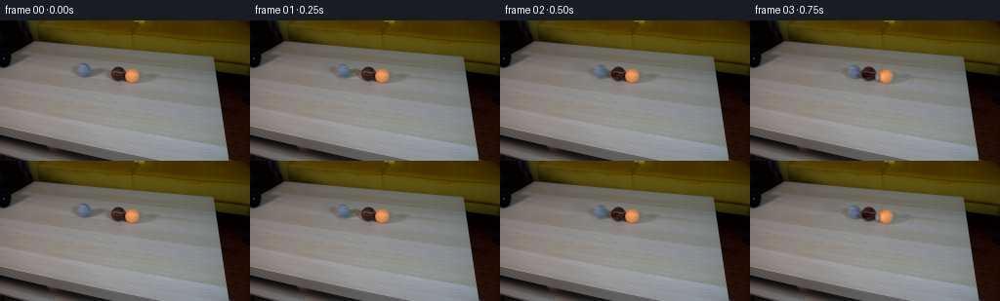
展开代码变化
--- 上一保存版本
+++ 本次保存版本
@@ -68,9 +68,12 @@
# Shadows extend rightwards; foreground pixels always belong to their ball.
weights=np.exp(-d*1.5)
weights/=np.maximum(weights.sum(axis=0),1e-30)
- for k,(c,r) in enumerate(zip(centers,radii)):
- core=((xx-c[0])/r[0])**2+((yy-c[1])/r[1])**2<1.04
- weights[:,core]=0; weights[k,core]=1
+ bodydist=np.stack([((xx-c[0])/r[0])**2+((yy-c[1])/r[1])**2
+ for c,r in zip(centers,radii)])
+ nearest=bodydist.argmin(axis=0)
+ core=bodydist.min(axis=0)<1.65
+ for k in range(3):
+ weights[k,core]=(nearest[core]==k).astype(float)
weights/=np.maximum(weights.sum(axis=0),1e-30)
layers=[residual*weights[k,...,None] for k in range(3)]
textures=[]
@@ -89,7 +92,7 @@
# Fill photographed seams solely to estimate stationary diffuse light.
smooth=cv2.inpaint(filled,(seam*255).astype(np.uint8),2,cv2.INPAINT_NS).astype(float)
smooth=gaussian_filter(smooth,(1.2,1.2,0))
- textures.append((smooth, original.astype(float)-smooth))
+ textures.append((smooth, (original.astype(float)-smooth)*np.clip((0.97-u*u-v*v)/0.13,0,1)[...,None]))
return layers,textures
候选 05播放与检查图
候选 06播放与检查图
点击播放 · 原生 RGB 像素

展开代码变化
--- 上一保存版本
+++ 本次保存版本
@@ -2,7 +2,7 @@
import numpy as np
from PIL import Image
import cv2
-from scipy.ndimage import gaussian_filter, map_coordinates
+from scipy.ndimage import gaussian_filter
import artifact_io
ROOT=Path(__file__).resolve().parent
@@ -117,6 +117,7 @@
def main():
+ (ROOT/'.tmp').mkdir(exist_ok=True)
plate,mask=clean_plate()
layers,textures=create_layers(plate)
states,angles=trajectories()
@@ -139,6 +140,6 @@
artifact_io.save(frames,ROOT)
Image.fromarray(np.uint8(np.clip(plate,0,255))).save(ROOT/'.tmp/plate.png')
np.save(ROOT/'.tmp/positions.npy',states)
- print(states[:, :, 0].round(2))
+ assert np.array_equal(frames[0], original)
if __name__=='__main__': main()
可观测工具轨迹
实际执行的命令与返回图片。
命令 1exit 0
/bin/bash -lc "ls -la && cat prompt.txt && printf '\\n---RULES---\\n' && cat GENERATION_RULES.md"
命令 2exit 0
/bin/bash -lc "cat artifact_io.py && python - <<'PY'
from PIL import Image
im=Image.open('first_frame.png');print(im.size); im.resize((1024,576)).save('.tmp/first_large.png')
PY"命令 3exit 0
/bin/bash -lc "python - <<'PY'
import importlib.util
for n in ['numpy','PIL','scipy','cv2']: print(n, bool(importlib.util.find_spec(n)))
from PIL import Image
im=Image.open('first_frame.png');im.crop((65,38,176,75)).resize((1110,370)).save('.tmp/balls.png')
PY"命令 4exit 0
/bin/bash -lc "cat > .tmp/test_clean.py <<'PY'
import cv2
import numpy as np
from PIL import Image
from scipy.ndimage import gaussian_filter
im=np.array(Image.open('first_frame.png'))
y,x=np.mgrid[:144,:256]
mask=np.zeros((144,256),np.uint8)
for (cx,cy,rx,ry) in [(86,52,10.5,9),(102,54,13,6),(121.5,55,11,10),(136,57,10,10),(149,60,16,8)]:
mask[((x-cx)/rx)**2+((y-cy)/ry)**2<1]=255
for method,m in [('telea',cv2.INPAINT_TELEA),('ns',cv2.INPAINT_NS)]:
b=cv2.inpaint(im,mask,4,m)
Image.fromarray(b).save('.tmp/clean_'+method+'.png')
Image.fromarray(b).resize((1024,576)).save('.tmp/clean_'+method+'_large.png')
Image.fromarray(mask).save('.tmp/cleanmask.png')
PY
python .tmp/test_clean.py"命令 5exit 0
/bin/bash -lc "python - <<'PY'
from PIL import Image
import numpy as np
im=np.array(Image.open('first_frame.png'))
for y in range(40,80,4):
print(y, [tuple(im[y,x]) for x in [65,75,110,170,180]])
PY"命令 6exit 0
/bin/bash -lc "cat > generate.py <<'PY'
from pathlib import Path
import numpy as np
from PIL import Image
import cv2
from scipy.ndimage import gaussian_filter, map_coordinates
import artifact_io
ROOT=Path(__file__).resolve().parent
W,H=256,144
original=np.array(Image.open(ROOT/'first_frame.png').convert('RGB'))
yy,xx=np.mgrid[:H,:W].astype(np.float64)
# Positions and camera-scaled radii measured only in the starting image.
centers=np.array([[85.9,51.5],[121.1,54.7],[135.5,56.7]],float)
radii=np.array([[7.45,7.25],[7.65,7.55],[7.45,7.5]])
def clean_plate():
mask=np.zeros((H,W),np.uint8)
for cx,cy,rx,ry in [(85,52,13,10),(99,53,15,7),(120,55,13,12),
(136,57,12,12),(152,60,17,8)]:
mask[((xx-cx)/rx)**2+((yy-cy)/ry)**2<1]=255
plate=cv2.inpaint(original,mask,4,cv2.INPAINT_NS).astype(float)
# Retain fine wood-grain structure in reconstructed areas with a local,
# nonlearned sample from an unoccupied part of the same tabletop.
sample=cv2.remap(original.astype(np.float32),(xx+61).astype(np.float32),
(yy+8).astype(np.float32),cv2.INTER_LINEAR,borderMode=cv2.BORDER_REFLECT)
detail=sample-gaussian_filter(sample,(1.4,2.5,0))
feather=gaussian_filter((mask>0).astype(float),1.1)
plate+=detail*feather[...,None]*0.5
# No changes at all outside the removed object/shadow areas.
plate=np.where(mask[...,None]>0,plate,original.astype(float))
return plate,mask
def trajectories():
# Equal-mass, frictional rolling spheres. Small timesteps resolve the
# two consecutive contacts rather than animating the balls independently.
pos=centers.copy()
vel=np.zeros((3,2)); vel[0]=[36.0,3.27]
r=np.array([7.25,7.25,7.25])
dt=1/1200
states=[]; angles=[]; rot=np.zeros(3)
for step in range(19*300+1):
if step%300==0:
states.append(pos.copy()); angles.append(rot.copy())
speed=np.linalg.norm(vel,axis=1)
dec=np.maximum(0,1-6.2*dt/np.maximum(speed,1e-12))
vel*=dec[:,None]
pos+=vel*dt
rot+=vel[:,0]*dt/r
for i,j in [(0,1),(1,2),(0,2)]:
delta=pos[j]-pos[i]; d=np.linalg.norm(delta)
if d<r[i]+r[j]:
n=delta/d
rel=np.dot(vel[j]-vel[i],n)
if rel<0:
impulse=-(1+0.84)*rel/2
vel[i]-=impulse*n; vel[j]+=impulse*n
correction=max(r[i]+r[j]-d-0.0001,0)*0.5*n
pos[i]-=correction; pos[j]+=correction
return np.array(states),np.array(angles)
def create_layers(plate):
residual=original.astype(float)-plate
# Partition the original photograph into soft, complementary object and
# shadow layers. Their sum reconstructs the original exactly.
d=np.stack([((xx-c[0])/13)**2+((yy-c[1])/10)**2 for c in centers])
# Shadows extend rightwards; foreground pixels always belong to their ball.
weights=np.exp(-d*1.5)
weights/=np.maximum(weights.sum(axis=0),1e-30)
for k,(c,r) in enumerate(zip(centers,radii)):
core=((xx-c[0])/r[0])**2+((yy-c[1])/r[1])**2<1.04
weights[:,core]=0; weights[k,core]=1
weights/=np.maximum(weights.sum(axis=0),1e-30)
layers=[residual*weights[k,...,None] for k in range(3)]
textures=[]
for k,(c,r) in enumerate(zip(centers,radii)):
# A smoothed illumination field remains camera-fixed, while the
# actual photographed seam and felt detail rotate on the sphere.
u=(xx-c[0])/r[0];v=(yy-c[1])/r[1]
sphere=u*u+v*v<0.90
filled=original.copy()
if k==0:
seam=(sphere)&(original[...,2]>original[...,0]+7)&(original[...,0]>109)
elif k==1:
seam=sphere & (original[...,0]>75)& (original[...,2]>53)
else:
seam=sphere & (original[...,1]>157)& (original[...,2]>109)
# Fill photographed seams solely to estimate stationary diffuse light.
smooth=cv2.inpaint(filled,(seam*255).astype(np.uint8),2,cv2.INPAINT_NS).astype(float)
smooth=gaussian_filter(smooth,(1.2,1.2,0))
textures.append((smooth, original.astype(float)-smooth))
return layers,textures
def rotated_detail(k,angle,textures):
c=centers[k];r=radii[k]
u=(xx-c[0])/r[0];v=(yy-c[1])/r[1]
rr=u*u+v*v
z=np.sqrt(np.maximum(0,1-rr))
# Rotation around the in-plane vertical rolling axis. The unobtainable
# rear hemisphere is completed by reflecting the photographed felt.
a=-angle
sx=np.cos(a)*u+np.sin(a)*z
sz=-np.sin(a)*u+np.cos(a)*z
sy=v
sx=np.where(sz>=0,sx,-sx)
smooth,tex=textures[k]
moved=cv2.remap(tex.astype(np.float32),(c[0]+r[0]*sx).astype(np.float32),
(c[1]+r[1]*sy).astype(np.float32),cv2.INTER_LINEAR,borderMode=cv2.BORDER_REFLECT)
# Edge shading and the low-resolution original outline stay unchanged.
alpha=np.clip((0.96-rr)/0.16,0,1)
return (moved-tex)*alpha[...,None]
def main():
plate,mask=clean_plate()
layers,textures=create_layers(plate)
states,angles=trajectories()
frames=[original.copy()]
for t in range(1,20):
frame=plate.copy()
# Composite furthest balls first; the orange is slightly nearer camera.
for k in range(3):
delta=states[t,k]-centers[k]
layer=layers[k].copy()
if abs(angles[t,k])>1e-4:
layer+=rotated_detail(k,angles[t,k],textures)
# Bilinear sampling retains the natural source photograph's focus.
moved=cv2.remap(layer.astype(np.float32),(xx-delta[0]).astype(np.float32),
(yy-delta[1]).astype(np.float32),cv2.INTER_LINEAR,
borderMode=cv2.BORDER_CONSTANT)
frame+=moved
frames.append(np.clip(np.rint(frame),0,255).astype(np.uint8))
frames=np.stack(frames)
artifact_io.save(frames,ROOT)
Image.fromarray(np.uint8(np.clip(plate,0,255))).save(ROOT/'.tmp/plate.png')
np.save(ROOT/'.tmp/positions.npy',states)
print(states[:, :, 0].round(2))
if __name__=='__main__': main()
PY
python generate.py"命令 7exit 0
/bin/bash -lc "python - <<'PY'
from PIL import Image
Image.open('frames/08.png').resize((1024,576)).save('.tmp/eight.png')
Image.open('.tmp/plate.png').resize((1024,576)).save('.tmp/plate_large.png')
PY"命令 8exit 0
/bin/bash -lc "cat > .tmp/sampleplate.py <<'PY'
import cv2
import numpy as np
from PIL import Image
from scipy.ndimage import gaussian_filter
im=np.array(Image.open('first_frame.png')).astype(float)
y,x=np.mgrid[:144,:256].astype(float)
mask=np.zeros((144,256),float)
for cx,cy,rx,ry in [(87,52,15,11),(100,54,15,8),(121,55,15,12),(137,57,15,12),(150,60,20,9)]:
q=((x-cx)/rx)**2+((y-cy)/ry)**2
mask=np.maximum(mask,np.clip((1.2-q)/.35,0,1))
sample=cv2.remap(im.astype(np.float32),(x+64).astype(np.float32),(y+5.2).astype(np.float32),cv2.INTER_LINEAR,borderMode=cv2.BORDER_REFLECT).astype(float)
region=(x>60)&(x<182)&(y>36)&(y<77)&(gaussian_filter(mask,2)<.01)
X=(x-120)/60;Y=(y-55)/20
A=np.stack([np.ones_like(x),X,Y,X*Y,X*X,Y*Y],-1)
diff=im-sample
coef=np.linalg.lstsq(A[region],diff[region],rcond=None)[0]
correct=sample+A@coef
plate=im*(1-mask[...,None])+correct*mask[...,None]
Image.fromarray(np.uint8(np.clip(plate,0,255))).resize((1024,576)).save('.tmp/plate_sample.png')
PY
python .tmp/sampleplate.py"命令 9exit 0
/bin/bash -lc "sed -i 's/(x+64)/(x+0)/; s/(y+5.2)/(y+26)/' .tmp/sampleplate.py; python .tmp/sampleplate.py"
命令 10exit 0
/bin/bash -lc "python - <<'PY'
p='generate.py'
s=open(p).read();start=s.index('def clean_plate():');end=s.index('\\n\\ndef trajectories',start)
s=s[:start]+'''def clean_plate():
mask=np.zeros((H,W),float)
for cx,cy,rx,ry in [(86,51.5,10,9),(98,53.5,14,6),
(121,55,11,10),(136,57,10,10),(149,59,16,7)]:
q=((xx-cx)/rx)**2+((yy-cy)/ry)**2
mask=np.maximum(mask,np.clip((1.35-q)/0.45,0,1))
sample=cv2.remap(original.astype(np.float32),xx.astype(np.float32),
(yy+26).astype(np.float32),cv2.INTER_LINEAR,
borderMode=cv2.BORDER_REFLECT).astype(float)
region=(xx>60)&(xx<182)&(yy>36)&(yy<77)&(gaussian_filter(mask,2)<.01)
X=(xx-120)/60;Y=(yy-55)/20
A=np.stack([np.ones_like(xx),X,Y,X*Y,X*X,Y*Y],-1)
coef=np.linalg.lstsq(A[region],(original-sample)[region],rcond=None)[0]
correct=sample+A@coef
plate=original*(1-mask[...,None])+correct*mask[...,None]
return plate,mask
''' + s[end:]
open(p,'w').write(s)
PY
python generate.py
python - <<'PY'
from PIL import Image
Image.open('frames/08.png').resize((1024,576)).save('.tmp/eight.png')
PY"命令 11exit 0
/bin/bash -lc "python - <<'PY'
from PIL import Image
import numpy as np
im=np.array(Image.open('first_frame.png'))
for y in range(42,66):
s=''
for x in range(72,148):
r,g,b=im[y,x].astype(int)
v=' '
if b-r>8 and 76<x<98:v='G'
if r<92 and g<75 and 110<x<131:v='B'
if r>150 and r-g>45 and 124<x<147:v='O'
s+=v
print(y,s)
PY"命令 12exit 0
/bin/bash -lc "python - <<'PY'
from PIL import Image
import generate as g
import numpy as np
p,m=g.clean_plate(); l,t=g.create_layers(p)
for k,(s,tex) in enumerate(t):
Image.fromarray(np.uint8(np.clip(s,0,255))).crop((int(g.centers[k,0]-11),int(g.centers[k,1]-11),int(g.centers[k,0]+12),int(g.centers[k,1]+12))).resize((230,230)).save('.tmp/smooth%d.png'%k)
PY"命令 13exit 0
/bin/bash -lc "python - <<'PY'
p='generate.py';s=open(p).read();a=s.index('def clean_plate():');b=s.index('\\n\\ndef trajectories',a)
s=s[:a]+'''def clean_plate():
mask=np.zeros((H,W),np.uint8)
for cx,cy,rx,ry in [(83,52,13,10),(98,53.5,16,7),
(119,55,13,11),(135.5,57,12,11),(149,59,18,8)]:
q=((xx-cx)/rx)**2+((yy-cy)/ry)**2
mask[q<1.1]=255
plate=cv2.inpaint(original,mask,4,cv2.INPAINT_NS).astype(float)
sample=cv2.remap(original.astype(np.float32),xx.astype(np.float32),
(yy+26).astype(np.float32),cv2.INTER_LINEAR,
borderMode=cv2.BORDER_REFLECT).astype(float)
detail=sample-gaussian_filter(sample,(1.3,2.0,0))
feather=gaussian_filter((mask>0).astype(float),1.1)
plate+=detail*feather[...,None]*0.8
plate=np.where(mask[...,None]>0,plate,original.astype(float))
return plate,mask
''' + s[b:]
open(p,'w').write(s)
PY
python generate.py
python - <<'PY'
from PIL import Image
for n in ['frames/08.png','.tmp/plate.png']:
Image.open(n).resize((1024,576)).save('.tmp/'+n.split('/')[-1])
PY"命令 14exit 0
/bin/bash -lc "python - <<'PY'
import numpy as np
from PIL import Image
p=np.load('.tmp/positions.npy')
canvas=Image.new('RGB',(600,120))
for j,f in enumerate([0,3,5,8,11]):
x,y=p[f,2];im=Image.open(f'frames/{f:02d}.png');canvas.paste(im.crop((int(x)-12,int(y)-12,int(x)+12,int(y)+12)).resize((120,120)),(j*120,0))
canvas.save('.tmp/oranges.png')
PY"命令 15exit 0
/bin/bash -lc "python - <<'PY'
p='generate.py';s=open(p).read();a=s.index(' for k,(c,r) in enumerate(zip(centers,radii)):',s.index('def create_layers'));b=s.index(' weights/=np.maximum',a)
s=s[:a]+''' bodydist=np.stack([((xx-c[0])/r[0])**2+((yy-c[1])/r[1])**2
for c,r in zip(centers,radii)])
nearest=bodydist.argmin(axis=0)
core=bodydist.min(axis=0)<1.65
for k in range(3):
weights[k,core]=(nearest[core]==k).astype(float)
''' + s[b:]
s=s.replace('textures.append((smooth, original.astype(float)-smooth))','textures.append((smooth, (original.astype(float)-smooth)*np.clip((0.97-u*u-v*v)/0.13,0,1)[...,None]))')
# Correction uses masked photographed texture both originally and rolled.
s=s.replace('return (moved-tex)*alpha[...,None]','return (moved-tex)*alpha[...,None]')
open(p,'w').write(s)
PY
python generate.py
python - <<'PY'
from PIL import Image
Image.open('frames/08.png').resize((1024,576)).save('.tmp/08.png')
PY"命令 16exit 0
/bin/bash -lc "python - <<'PY'
p='generate.py';s=open(p).read().replace('from scipy.ndimage import gaussian_filter, map_coordinates','from scipy.ndimage import gaussian_filter').replace(' print(states[:, :, 0].round(2))',' assert np.array_equal(frames[0], original)');s=s.replace(' plate,mask=clean_plate()\\n layers,textures',\" (ROOT/'.tmp').mkdir(exist_ok=True)\\n plate,mask=clean_plate()\\n layers,textures\");open(p,'w').write(s)
PY
python generate.py
python - <<'PY'
import numpy as np
from PIL import Image
from pathlib import Path
frames=np.stack([np.array(Image.open(p)) for p in sorted(Path('frames').glob('*.png'))])
assert frames.shape==(20,144,256,3)
assert frames.dtype==np.uint8
assert np.array_equal(frames[0], np.array(Image.open('first_frame.png')))
f=np.load('pixels.npz')['pixels']
assert f.shape==(144,256,20)
print('Verified 20 RGB frames, 256Ã144; first frame identical.')
PY"视觉工具实际返回图片 1
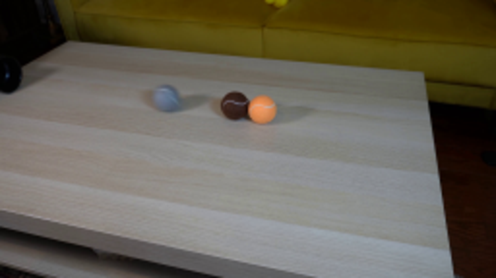
视觉工具实际返回图片 2
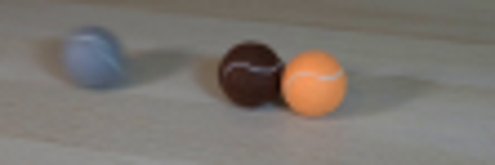
视觉工具实际返回图片 3
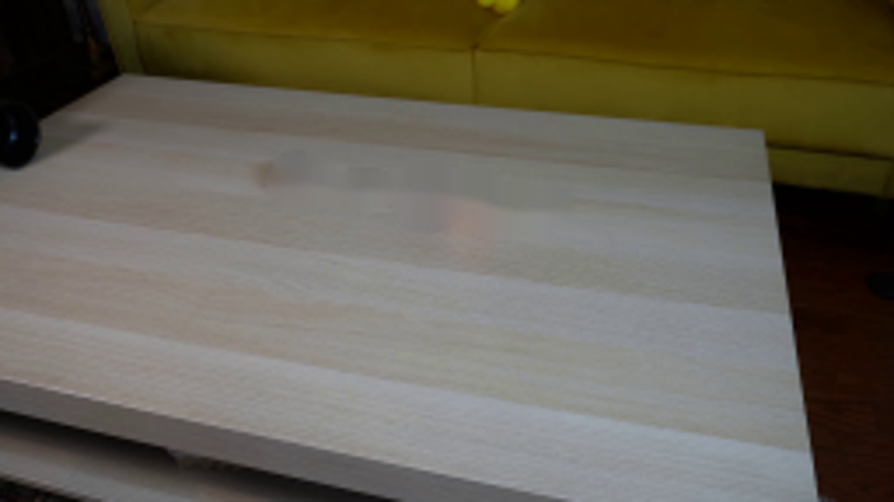
视觉工具实际返回图片 4
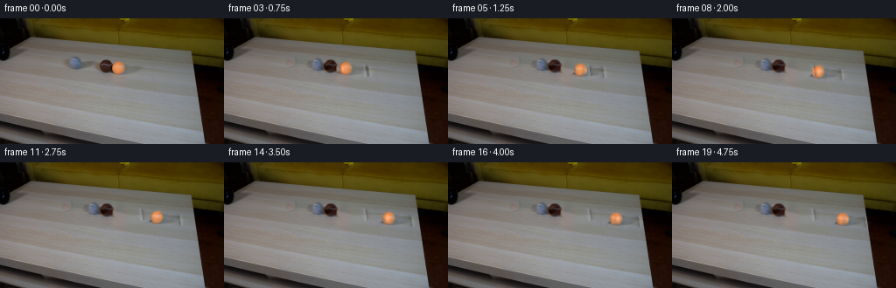
视觉工具实际返回图片 5
视觉工具实际返回图片 6
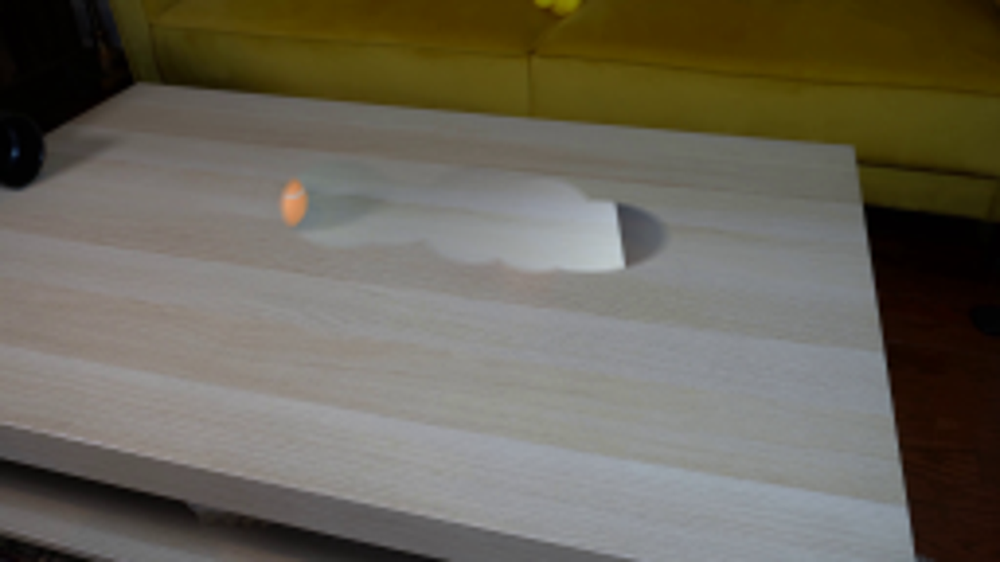
视觉工具实际返回图片 7
视觉工具实际返回图片 8
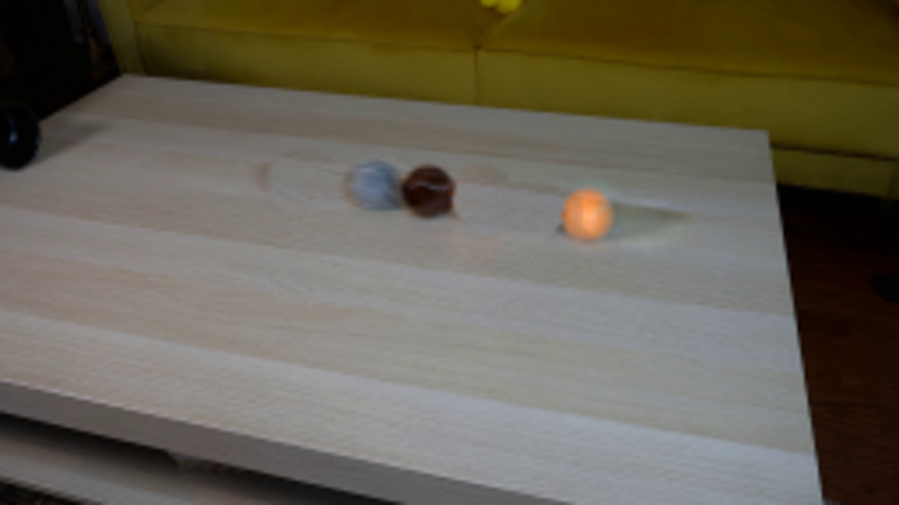
视觉工具实际返回图片 9
视觉工具实际返回图片 10
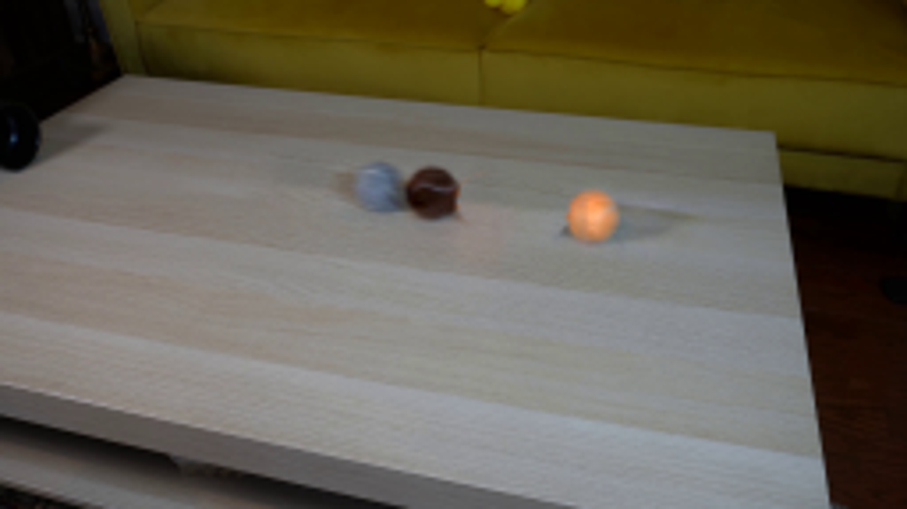
视觉工具实际返回图片 11
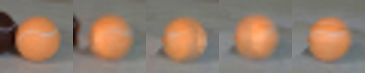
视觉工具实际返回图片 12
保存候选 6 份；完成命令 16 次；可验证图片返回 12 张。原始 API 响应与完整日志保留在本地。